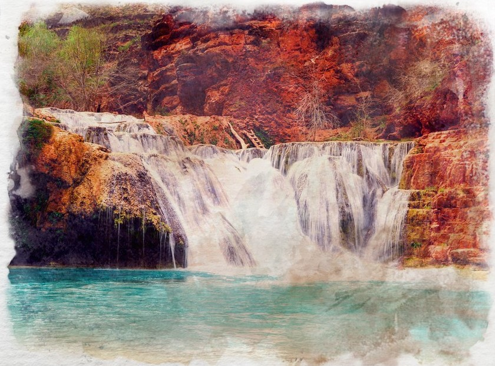

Clay
Formed by compressed sediment, clay is a sticky, soft and porous orange-red substance that becomes hard and brittle when dried or fired. Used in construction as an adhesive as well as for ceramics and canals.